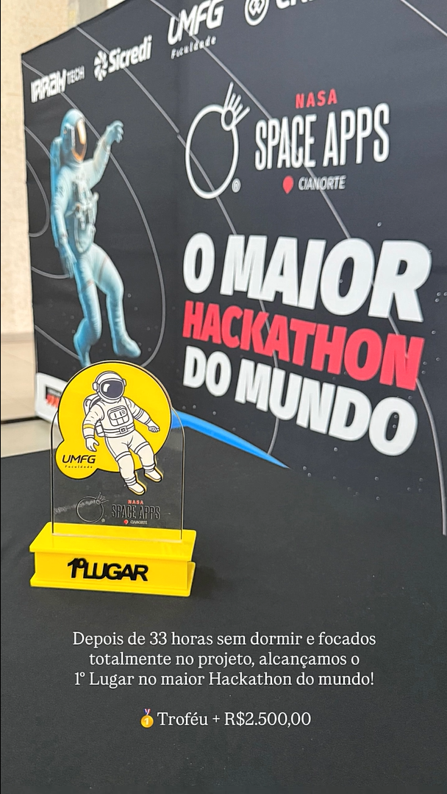
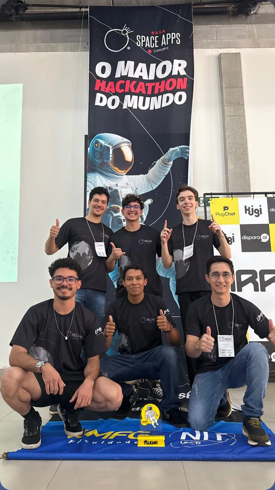
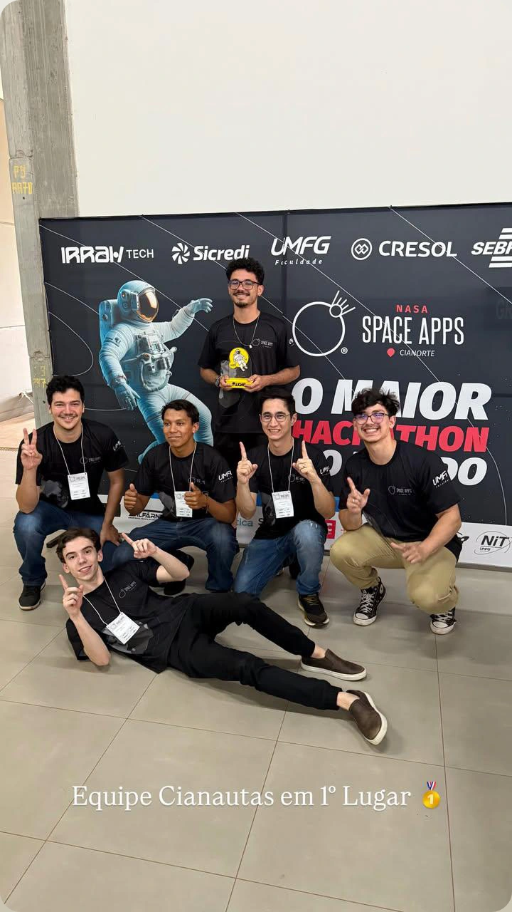

Sou recém-graduado em Análise e Desenvolvimento de Sistemas (ADS) e estou em busca de uma pós-graduação para ampliar meus conhecimentos e adquirir mais experiência. Tenho interesse em seguir nas áreas de Segurança da Informação e Engenharia de Software, pois acredito que essas formações podem me fornecer bases sólidas para me tornar um desenvolvedor de software mais completo. Atualmente, estou também realizando cursos na plataforma DIO, que têm contribuído para meu aprendizado contínuo e fortalecimento das minhas habilidades técnicas.



No meu segundo ano de faculdade, participei pela segunda vez do HACKATON da NASA. Lideei uma equipe que conquistou o primeiro lugar entre todos os projetos apresentados durante o evento da UMFG. Além disso, nosso projeto ficou entre os 10% melhores do mundo enviados para a NASA. Embora não tenhamos avançado além dessa etapa, cada minuto desse dia foi marcado por experiências inesquecíveis e extremamente gratificantes.